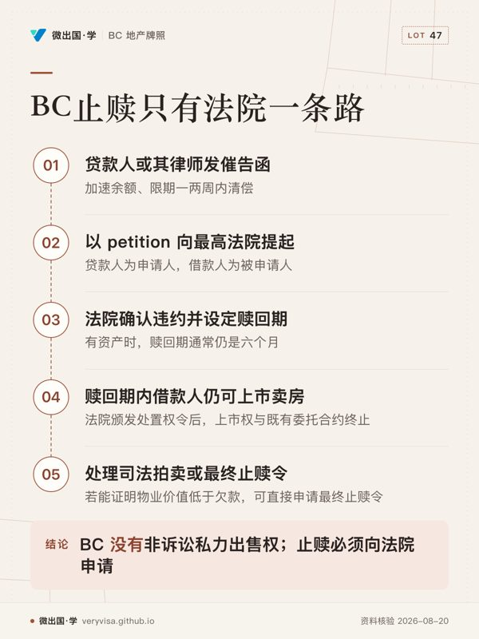

🃏 Flashcards · 3 闪卡 · 3 张 🖼 Slides · 2 幻灯 · 2 页 ✍️ Questions · 12 刷题 · 12 道
按揭金融 mortgage-finance P2 稳住 P2 Hold steady
ZH EN ZH + EN
先看这一章怎么考 First, how this chapter is tested
定性对照题：问按揭究竟是一笔贷款、一次过户，还是普通法上的转让，考卷面按手册主流观点答仍保留转让性质，同时分得清现行法首先把它写成押记、贷款人不是注册所有人。 Characterisation questions ask whether a mortgage is a loan, a conveyance of title, or a transfer at common law. On the paper, follow the manual's mainstream view and answer that it still retains the character of a transfer, while keeping clear that current law first writes it as a charge and that the lender is not the registered owner. 条款效力题：同一题里放上贷款当时的买断期权、事后另签的独立期权、禁止提前还款或禁止承担，考哪一条卡住了最终赎回、哪一条仍然可以强制执行。 Clause-effect questions place in one item an option to purchase taken when the loan was made, a separate option signed later, and a ban on prepayment or on assumption. They test which one clogs the final redemption and which one can still be enforced. 责任主体题：买家承担之后原借款人还负不负责，催告有没有落在三个月里，物业是住宅还是生意，考默示个人契诺还在、三条解除路径只限住宅，商业按揭要另看更替契约成不成立。 Liability questions ask whether the original borrower is still liable after the buyer assumes, whether a demand fell inside three months, and whether the property is a home or a business. They test that the implied personal covenant remains, that the three release paths are limited to a residential mortgage, and that a commercial mortgage depends on whether a novation is made out. 最常丢分的陷阱（看到题干信号就警觉） Traps that cost the most marks (watch for the signal in the stem)
止赎两条路的后果记反 Swapping the results of the two foreclosure routes 题干出现其他省份、power of sale、不经法院出售，或同时问成为产权人之后还能不能再追差额。 The stem mentions another province, a power of sale, or a sale without a court, or it asks whether the difference can still be claimed after the lender becomes the owner. 承担即脱身 Treating assumption as a release 题干写买家已经承担、卖方没有申请书面批准，或催告发生在到期后的三个月之内，选项却说卖方在过户或到期当天自动解脱。 The stem says the buyer has already assumed, the seller did not apply for written approval, or the demand came within three months after expiry, while an option says the seller was released automatically on completion or on the expiry date. 顺位与赎回方向记反 Reversing priority and the direction of redemption 题干给出第一到第四的登记顺序，问某一顺位的最终令抹掉谁，或借款人只够还一份时必须先碰哪一份。 The stem gives the registration order from first to fourth and asks whom a final order at one rank removes, or which mortgage the borrower must touch first when the money is enough for only one. 本章考点页：导图、要点表、7 道带逐项解析的练习 →
本章地位 ：ch13/ch14 讲按揭这门生意怎么做（利率、核贷、产品），本章讲这门生意背后那份文件的法律骨架——按揭在法律上到底是什么权益、违约之后各方能做什么、谁先谁后拿钱。ch16/ch17 讲核贷与承保，本章不展开。
核实日期：2026-09-05 ；法条文本核到 BC Laws／Justice Canada 自标的 current to 2026-09-01（联邦法条另标日期），出处见文末源表。
这一章最容易被低估的一句话，是考试口径自己写的：「legally, however, a mortgage is not a loan」。按揭不是钱，按揭是一份对土地权益的押记 ，用来给一笔钱做担保。搞混这两件事，后面的止赎、优先权、承担全都会想岔。
一、按揭是什么：一份押记，不是一次转让 本节回答 This section answers 格式瑕疵能否靠异议登记 Whether a form defect can be protected by a caveat
谁是谁 ：借钱的人叫按揭人 （mortgagor），把地押给他/她的贷款人叫按揭权人 （mortgagee）。按揭人交出按揭、拿到贷款；按揭权人交出贷款、拿到按揭作担保。这是一组债务人—债权人关系，只是债权人手里多了一份对土地的权益。
图：按揭法律骨架——按揭是土地权益的押记，不是贷款本身
历史底子 ：普通法上，按揭原本是把土地的所有权与占有权整体转让 给贷款人，附一个条件——按期还清就转回来。逾期一天，地就归贷款人，借款人还照样欠债。衡平法院看不下去，判给借款人一项衡平赎回权 （equity of redemption）：过了合同还款日仍可以还钱赎地，通常给六个月。贷款人要终止这项权利，只能向衡平法院申请——这就是止赎 （foreclosure）的历史源头，也是为什么止赎至今仍是一项法院程序，而不是贷款人自己关起门来做的事（详见第九节）。
BC 现行的精确定性 ：考试口径说 BC「主流观点」是按揭仍保留普通法上「转让」的性质。这句话援引的是判例通说，但现行《土地产权法》（Land Title Act，以下 LTA）第 231(1) 条把话讲得更精确：依本法登记的按揭，效果首先是押记（charge）按揭人的权益 ，不论文件里有没有转让字样；第 231(2) 条才补一句拟制条款——按揭人与按揭权人享有「如同已经转让」的法律与衡平权利义务。
⚠️
「按揭＝把地转让给了银行」这句话在精确表述时是不准确的
判例原则可继续学习，正式考试范围以注册课程现行材料为准；但给客户解释、或写法律文件时，
正确的说法是「按揭是对你名下这块地的一项押记 ，法律拟制给银行『视同已转让』的权利义务」——
不是银行真的拿到了完全所有权。这个区别在解释保证基金赔付、破产优先顺位时会直接影响结论：
按揭权人从来不是该地的注册所有人，产权登记簿上按揭人的名字从头到尾都在（LTA s.231(1)(2)）。
法律按揭 vs 衡平按揭 ：真正登记在产权上、依 LTA 生效对抗第三人的，是法律按揭 。以下三种情况会产生只在当事人之间有效、对第三人无效的衡平按揭 ：
交出重复产权证 （duplicate indefeasible title）——ch04 讲过，只要重复证在外面没交回，登记处就不办后续转让/按揭登记。把它交给贷款人做担保就能成立衡平按揭，前提是双方确有押担保的意图 （否则法院可能认定只是代为保管），见 Royal Bank of Canada v. Mesa Estates Ltd. (1985)。现在金融机构极少用这招，都要求走正式的 LTA 登记。约定将来给一份按揭、或格式不合规无法登记的按揭 ——这两种都被承认为「现时」的衡平按揭；后一种情况贷款人应当去登记一份异议登记（caveat） 保护地位，直到文件补齐能正式登记为止。但如果这份按揭是制定法本身禁止登记 （而不只是格式问题）——比如上面第 1 种「交出重复证」的做法——就不能靠登记 caveat 来救，因为「不能间接做法律不许直接做的事」。把按揭伪装成一份转让 ——法院会看穿实质：只要证明交易主要目的是拿土地做贷款担保，法院照样认它是按揭，衡平赎回权照样适用。
节末检索小测 · 先别往回翻，凭记忆作答 Quick recall check: answer from memory before scrolling back
Lender A holds a mortgage that cannot be registered because the form is defective, and the parties intended it as security. Lender B was given only the duplicate certificate of title as security, a method the statute itself will not allow to be registered. Both want to file a caveat. Which statement matches the course?
贷款人A持有一份因格式不合格而无法登记的按揭，双方确有用它做担保的意图。贷款人B只拿到重复产权证作担保，而制定法本身不允许用这种方式登记。两人都想登记一份异议登记。哪一项符合课程？
a Both may file a caveat. Any security that cannot be registered today can be protected by the same filing. ✗ 错误。这是把两种衡平按揭（equitable mortgage）当成同一种救济。格式不合格的按揭可以靠异议登记（caveat）保住地位，直到文件补齐；制定法本身禁止登记的做法，不能靠异议登记间接完成。 Wrong. This treats two kinds of equitable mortgage as the same remedy. A mortgage that cannot be registered because the form is defective can keep its position by a caveat until the document is put in order. A method that the statute itself forbids to be registered cannot be completed indirectly by a caveat.
b Lender A may file a caveat until a proper mortgage can be registered. Lender B cannot use a caveat to do what the statute forbids. ✓ 正确。约定将来给按揭、或格式不合规而无法登记的按揭，都是现时的衡平按揭，后一种应当登记异议登记（caveat）保护地位。交出重复产权证（duplicate indefeasible title）若确有担保意图也能成立衡平按揭，但这种做法是制定法禁止登记的，不能靠异议登记来救，因为不能间接做法律不许直接做的事。 Correct. An agreement to give a mortgage in the future, and a mortgage that cannot be registered because the form does not comply, are both present equitable mortgages. The second ought to be protected by filing a caveat. Handing over the duplicate indefeasible title can also create an equitable mortgage if there really was an intention to give security, but that method is one the statute forbids to be registered. It cannot be saved by a caveat, because a person cannot do indirectly what the law forbids to be done directly.
c Neither arrangement is an equitable mortgage. Only a document already accepted by the land title office creates any security. ✗ 错误。这是把法律按揭（legal mortgage）的登记效力套到当事人之间。尚未合法登记的安排仍可以在双方之间成为衡平按揭，只是不能像已登记按揭那样对抗第三人。登记处已经接受，并不是衡平按揭的成立条件。 Wrong. This applies the effect of registering a legal mortgage to the parties as between themselves. An arrangement that is not yet validly registered can still be an equitable mortgage between the two parties. It simply cannot bind a third party the way a registered mortgage can. Acceptance by the land title office is not a condition for an equitable mortgage to arise.
d Lender B may file the caveat, and Lender A may not, because a defective form is never security of any kind. ✗ 错误。这是把两种情形的救济对调了。格式不合规仍是现时的衡平按揭，异议登记（caveat）正是用来保护它的。被制定法禁止的重复证做法才不能靠异议登记补救。 Wrong. This swaps the remedies for the two situations. A form that does not comply is still a present equitable mortgage, and a caveat is what protects it. Only the duplicate-title method forbidden by the statute cannot be cured by a caveat.
看答案与每个选项的解析 Show the answer and why each option is right or wrong 答案 Answer ：b
二、衡平赎回权与「不得设卡」原则 本节回答 This section answers 口头宽限挡不住止赎 An oral extension does not stop foreclosure 本章考题 4 Question 4
这条原则是整个按揭法的地基：借款人最终必须能够无条件地赎回自己的地 ，任何条款只要「卡住」了这项权利，一律无效——这叫「equity of redemption 上不得设卡」（no clog on the equity of redemption）。
最经典的卡是：贷款谈成时顺带给贷款人一个买断该房产的期权 。一旦贷款人行使期权，借款人就永远赎不回地了，所以这个期权本身无效。但如果买断期权是贷款成立之后 、作为一笔独立交易 另外谈的，就有效——它和按揭没有法律上的牵连。同样，把赎回期定得离谱地远（比如一百年）也会被判无效，因为实质上等于不可赎回。
反过来，限制或禁止提前还款、或禁止转让方承担按揭 ，都不算「设卡」，是可以强制执行的——这类条款限制的是还款的时点与方式，不是最终能不能赎回。
附带利益条款 （collateral advantage）：比如借款人开加油站，按揭里顺带约定贷款期间只能进贷款人指定品牌的油品。这类条款如果被认定是按揭本身的条款 ，一旦持续到赎回之后仍然有效，就会被判无效（等于变相设卡）；如果被认定是与按揭捆绑但各自独立的一笔交易 ，赎回之后继续有效是可以的。判断标准是当时双方的真实意图，逐案审查。
诚信履约原则 ：Bhasin v. Hrynew , 2014 SCC 71 确立了合同法上「诚实履约」的一般原则。但在按揭领域，BC 法院对这条原则的适用相当克制——1026238 B.C. Ltd. v. Pastula , 2016 BCSC 1812（BC 上诉法院维持）明确：贷款人口头表示「会给时间纠正违约」而后仍启动止赎，并不违反诚信义务，因为诚信义务只保护当事人合同上的合法利益 ，口头让步在没有对价的情况下不构成新合同。不要指望「贷款人曾经口头松口」能挡住止赎。
节末检索小测 · 先别往回翻，凭记忆作答 Quick recall check: answer from memory before scrolling back
A borrower misses a payment. The lender says, by telephone only, that more time will be allowed to cure the default. No new consideration is given. The lender then starts a foreclosure. The borrower says the duty of honest performance makes that telephone call a binding extension. Which statement matches the course?
借款人漏了一期还款。贷款人只在电话里说会给更多时间纠正违约。没有新的对价。贷款人随后启动止赎。借款人说，诚实履约义务使这通电话成为有约束力的宽限。哪一项符合课程？
a The call is a new contract. Honest performance requires the lender to wait for as long as the borrower needs. ✗ 错误。这是把口头松口当成新合同。诚实履约只保护当事人在合同上的合法利益。没有对价的口头让步不构成新合同，也不能把宽限延长到借款人自定的时间。 Wrong. This treats an oral concession as a new contract. Honest performance protects only a party's legitimate interests under the contract. An oral concession without consideration is not a new contract, and it cannot stretch the extension to whatever time the borrower chooses.
b The call is binding only if the mortgage already bans prepayment. Otherwise the lender must sue for the missed instalment alone. ✗ 错误。这是把设卡（clog）规则拿来判断一句口头话。禁止提前还款本身可以强制执行，它既不能把电话变成合同，也不能限制贷款人只能起诉那一期欠款。 Wrong. This uses the clog rule to judge an oral remark. A ban on prepayment is itself enforceable. It cannot turn the telephone call into a contract, and it cannot limit the lender to suing for that one missed instalment alone.
c The call voids the mortgage. A lender who mentions more time gives up both the debt and the foreclosure. ✗ 错误。这是把一句没有对价的口头话放大成按揭作废。债务和止赎权都还在。不能指望贷款人曾经口头松口就挡住止赎。 Wrong. This inflates an oral remark made without consideration into a void mortgage. The debt and the right to foreclose both remain. Do not count on a lender's earlier oral concession to stop the foreclosure.
d The call does not stop the foreclosure. Without consideration it is not a new contract, and honest performance does not turn it into one. ✓ 正确。合同法上的诚实履约（honest performance）只保护合同上的合法利益。贷款人口头表示会给时间、其后仍启动止赎，并不违反这项义务，因为没有对价的口头让步不构成新合同。不要指望这句话挡住止赎。 Correct. Honest performance in contract law protects only legitimate interests under the contract. A lender who says by telephone that more time will be allowed, and who then starts a foreclosure, does not breach that duty, because an oral concession without consideration is not a new contract. Do not count on that remark to stop the foreclosure.
看答案与每个选项的解析 Show the answer and why each option is right or wrong 答案 Answer ：d
三、Form B：一份按揭文件怎么拼出来 本节回答 This section answers 漏交条款不会使债务消失 Failing to deliver the terms does not make the debt disappear
自 1990 年代初 LTA 改革以来，产权登记处只接受 一种格式的按揭文件——Form B ，两部分拼接（现行条号 LTA s.225）：
Part 1 ：当事人、法定地块描述、双方及见证人签署，以及对 Part 2 条款的任何修改说明。Part 2 ：其余全部条款，三选一采用——① 局长依 s.227 制定的标准按揭条款 ；② 某贷款人依 s.228 预先备案的自定标准条款 ；③ 直接写在 Part 2 里的明示条款 。
贷款人若采用①或②，必须在签约当时或之前 把该套标准条款的真实副本交给借款人（含任何修改），并取得借款人的确认书（s.229(1)）。没做到会怎样？ 现行文本给的答案不是「按揭无效」——s.229(2) 明文：Part 2 条款转而视为局长核准的默认版本，但不会 因此让按揭债务消失、也不影响法院止赎权与普通法上任何其他救济。也就是说，漏交条款副本的后果是「条款被替换成默认版」，不是「按揭作废」。
节末检索小测 · 先别往回翻，凭记忆作答 Quick recall check: answer from memory before scrolling back
A lender adopts a set of filed standard mortgage terms. At signing, the borrower never receives a true copy and never signs an acknowledgement. The borrower says the mortgage and the debt are both void. Which statement matches the course?
贷款人采用一套已经备案的标准按揭条款。签约时借款人没有收到真实副本，也没有签署确认书。借款人说按揭和债务都因此无效。哪一项符合课程？
a The mortgage continues. The missing copy replaces those terms with the approved default terms, and the debt and foreclosure remain. ✓ 正确。采用标准条款或备案条款的，必须在签约当时或之前把真实副本交给借款人并取得确认。没做到时，《土地产权法》（Land Title Act）第229(2)条把 Part 2 视为局长核准的默认版本，既不使按揭债务消失，也不影响法院止赎权和其他普通法救济。 Correct. Where standard terms or filed terms are adopted, a true copy must be given to the borrower at or before signing, and an acknowledgement must be obtained. If that is not done, section 229(2) of the Land Title Act treats Part 2 as the default version approved by the registrar. That neither makes the mortgage debt disappear nor affects the court's power to foreclose or the other common-law remedies.
b The mortgage is void, but the borrower must still repay the debt as an unsecured loan with no land security. ✗ 错误。这是把漏交副本理解成担保消失、只剩无担保债务。后果不是按揭作废，而是条款被替换成默认版本，土地上的担保和止赎权都还在。 Wrong. This reads a missing copy as the security disappearing, leaving only an unsecured debt. The result is not a void mortgage. The terms are replaced by the default version, and the security in the land and the right to foreclose both remain.
c Both the mortgage and the debt disappear. A missing copy is the same as never having signed Part 1. ✗ 错误。这是漏交即作废的陷阱。Part 1 的当事人、地块描述和签署仍然有效。没有交付副本，影响的是 Part 2 采用哪一套条款，不是整份合同从未成立。 Wrong. This is the trap that a missing delivery voids everything. The parties, the land description, and the signatures in Part 1 remain effective. Failing to deliver a copy affects which set of terms Part 2 uses. It does not mean the whole contract never came into being.
d The lender may keep the undisclosed terms exactly as filed, because only Part 1 needs to be given to the borrower. ✗ 错误。这是把交付义务看没了。采用标准条款或预先备案条款时，副本必须在签约当时或之前交付。漏交的后果不是原封不动保留那套没交给借款人的条款。 Wrong. This treats the duty to deliver as if it were not there. When standard terms or terms filed in advance are adopted, the copy must be delivered at or before signing. The result of a missing delivery is not that the set never given to the borrower is kept exactly as filed.
看答案与每个选项的解析 Show the answer and why each option is right or wrong 答案 Answer ：a
四、条款逐条拆解：柜台上真正会用到的那几条 本节回答 This section answers 看实质谁是主债务人 Look at the substance to see who the primary debtor is
加速条款 （acceleration）：借款人违约时，贷款人有权 （不是必须）要求立即偿还全部未到期余额。这是贷款人的选择权，不是自动触发——如果按揭利率是 15%、市场利率跌到 9%，贷款人显然不想让它自动加速，宁可继续收 15%。法院对加速条款的宽免见下一段。
全权条款 （omnibus clause）：借款人漏交物业税或共管管理费但按揭本身按时还款时，给贷款人一个「代垫再计息」的替代方案，不必直接动用加速条款。
保险、维修、附着物条款 ：要求借款人足额投保、未经同意不得改建、明确哪些物件算作附着物（越多算附着物，贷款人的担保就越厚）。
进一步放款条款 （advances）：贷款人没有义务 放出全部约定金额；分阶段放款（建房贷款常见）能压低烂尾/留置权风险，借款人也只按已放出的部分计息。这一条与下面第八节的优先权规则直接相关。
优先负担条款、进一步押记限制、共管投票条款、担保人条款 ：分别要求借款人维持在先负担的良好状态、未经同意不得再设押记、把共管大会上关于保险/维护/财务的表决权让渡给贷款人、以及区分共同承诺人（covenantor） 与担保人（guarantor） ——前者是主债务人 ，贷款人可以在追究借款人之前直接找他要钱；后者是次债务人 ，贷款人必须先用尽对借款人的一切追索手段才能找他。文件里两个词混用是常见的起草失误，法院会看合同实质内容而不是签署栏上写的头衔来判断到底是哪一种。
ℹ️
到期条款、可携带条款
「到期即触发（due on sale）」条款让按揭在物业出售时不能被承担，除非贷款人另行书面同意——没这条按揭默认可以承担。
「可携带（portability）」条款允许借款人换房时把现有利率带到新按揭上，若需要追加贷款，通常按「新旧混合利率」计算，且要重新过资质审核。
节末检索小测 · 先别往回翻，凭记忆作答 Quick recall check: answer from memory before scrolling back
A third person signs a mortgage. The signature line says guarantor. The body of the document makes that person a primary debtor and allows the lender to sue that person before suing the borrower. Which statement matches the course?
第三人在按揭上签字。签署栏写的是担保人。文件正文把这个人写成主债务人，并允许贷款人在起诉借款人之前先起诉这个人。哪一项符合课程？
a The signature line controls. The lender must exhaust every remedy against the borrower before claiming against this person. ✗ 错误。这是只看签署栏头衔的陷阱。法院看合同实质，不看栏上写的是担保人（guarantor）还是别的称号。正文已经把这个人写成可以先行追索的主债务人。 Wrong. This is the trap of looking only at the title on the signature line. The court looks at the substance of the contract, not whether the line says guarantor or some other title. The body has already made this person a primary debtor who can be pursued first.
b The person is a covenantor in substance, but the lender may sue that person only after the land has been sold and a shortfall remains. ✗ 错误。这是把主债务人的追索顺序改成了先处置土地。共同承诺人（covenantor）是主债务人，贷款人可以在追究借款人之前直接找这个人要钱，不必先等土地卖完。 Wrong. This changes the order of a claim against a primary debtor into a sale of the land first. A covenantor is a primary debtor. The lender may go directly to that person for the money before pursuing the borrower, and need not wait until the land has been sold.
c The person is a covenantor in substance. The lender may claim against that person before pursuing the borrower, despite the printed title. ✓ 正确。共同承诺人（covenantor）是主债务人，贷款人可以在追究借款人之前直接追索。担保人（guarantor）才是次债务人，必须先用尽对借款人的追索。文件里两个词混用时，法院看实质内容，不看签署栏头衔。 Correct. A covenantor is a primary debtor, and the lender may claim against that person before pursuing the borrower. Only a guarantor is a secondary debtor, and the remedies against the borrower must be exhausted first. When the document mixes the two words, the court looks at the substance, not the title on the signature line.
d The person is a mere witness. A primary-debtor clause is valid only if the word covenantor appears in the signature line. ✗ 错误。这是把实质条款降成见证人。正文已经设定主债务人和先行追索，不因为签署栏印了另一个词就变成空白签字。头衔不能代替合同实质。 Wrong. This reduces a substantive clause to the status of a witness. The body has already created a primary debt and a right to claim first. Printing another word on the signature line does not turn that into a blank signature. The title cannot replace the substance of the contract.
看答案与每个选项的解析 Show the answer and why each option is right or wrong 答案 Answer ：c
五、几种特殊按揭 本节回答 This section answers 整盘融资随单位卖出解除 Financing of the whole project is released as units sell
过渡性总按揭 （interim blanket mortgage）：整个共管/分割项目先押一份大按揭融资，随每个单位卖出按比例部分解除，剩余单位继续担保未偿部分。卖方分期融资 （vendor take-back mortgage）：卖方把部分房价「借」给买家，买家把完全所有权登记在自己名下，卖方登记一份按揭作为回款担保。与「agreement for sale」（见第十节）财务上等价、法律上不同——take-back 里买家先拿到完全所有权。倒按揭 （reverse annuity mortgage，RAM）：贷款人分期付钱给借款人（通常是退休老人），到期或身故时靠再融资、卖房或遗产清偿累计本息。过桥贷款 （bridge financing）：短期融资，等长期贷款到位或旧房卖掉后清偿，利率通常更高。
节末检索小测 · 先别往回翻，凭记忆作答 Quick recall check: answer from memory before scrolling back
A developer finances a whole stratified project with one mortgage. As each unit sells, a proportionate part of that mortgage is released, and the unsold units continue to secure what remains. Which arrangement is this?
开发人以一份按揭为整个分层项目融资。每卖出一个单位，就按比例解除相应部分，未售出的单位继续担保尚未清偿的余额。这是哪一种安排？
a A vendor take-back mortgage, because the buyer of each unit receives the fee simple and the seller registers a fresh mortgage. ✗ 错误。这是把整盘融资说成了卖方分期融资（vendor take-back mortgage）。后者是卖方把部分房价借给买家，买家先拿完全所有权，卖方再登记一份按揭。本题是项目上原有的一份大按揭随出售部分解除。 Wrong. This describes financing of the whole project as a vendor take-back mortgage. That other arrangement is the seller lending part of the price to the buyer: the buyer first receives the fee simple, and the seller then registers a mortgage. This question is one existing large mortgage on the project, released in part as units sell.
b An interim blanket mortgage. One mortgage covers the project, with partial releases as units sell and the rest still securing the balance. ✓ 正确。这就是过渡性总按揭（interim blanket mortgage）：整个项目先押一份大按揭，每个单位卖出时按比例部分解除，剩余单位继续担保未偿部分。 Correct. This is an interim blanket mortgage. One large mortgage is placed on the whole project. As each unit sells, a proportionate part is released, and the remaining units continue to secure the unpaid balance.
c A reverse annuity mortgage, because money is advanced against the project and repaid only when a later sale occurs. ✗ 错误。这是把项目融资说成了倒按揭（reverse annuity mortgage）。倒按揭是贷款人分期付钱给借款人，通常在到期或身故时靠再融资、卖房或遗产清偿，不是随每个单位出售而部分解除的项目按揭。 Wrong. This describes project financing as a reverse annuity mortgage. A reverse annuity mortgage is the lender paying the borrower in instalments, usually repaid at maturity or on death by refinancing, a sale, or the estate. It is not a project mortgage that is released in part as each unit sells.
d Bridge financing, because every construction mortgage is a short loan at a higher rate that ends when the first unit sells. ✗ 错误。这是把整盘按揭说成了过桥贷款（bridge financing）。过桥贷款是短期融资，用来等到长期贷款到位或旧房卖掉，通常利率更高。它不是随每个单位按比例解除、其余单位继续担保的那一份总按揭。 Wrong. This describes the whole-project mortgage as bridge financing. Bridge financing is short-term financing used while waiting for a long-term loan to come in or for a former home to be sold, and the rate is usually higher. It is not the one blanket mortgage that is released in proportion as each unit sells, with the remaining units continuing as security.
看答案与每个选项的解析 Show the answer and why each option is right or wrong 答案 Answer ：b
六、联邦两道红线：利息法与刑法高利贷罪 本节回答 This section answers 违约取消折扣等于多收息 Cancelling a discount on default is extra interest
《利息法》（Interest Act） ——这是联邦法，考试口径的描述现行全部准确（该法自 2008-06-18 起未再修订）：
s.3 ：文件要求付息但没写利率的，法定按年息 5% 计。s.6/s.7 ：还款方式如果是「本息混合（blended）」，按揭文件必须载明按年或半年、非预付 方式计算的利率声明；不写，一分利息都收不了 ；写了但比还款条款里实际算出的利率低，只能按声明的低利率收。s.8 ：逾期利息/罚金不得 让欠款人承担比「不逾期时的本金利率」更高的实际负担——Krayzel Corp. v. Equitable Trust Co. , 2016 SCC 18 判定：「违约就取消折扣利率」在实质上等于对违约多收利息，同样违反 s.8；但单纯因为时间推移 （非因违约）而上调利率，不违反。s.10 ：只对个人借款人 、且按揭约定五年内不到期时，五年期满后借款人可以随时提前还清本息加三个月利息了结全部债务，之后贷款人不得再收任何利息。公司、无限责任公司与 2012 年后为商业目的设立的合伙/信托，一律不能主张这条权利（2012 年前设立的可保留）。续期改按揭日期的，五年重新起算；只延长期限不改日期的，从原日期起算。
《刑法》高利贷罪——这一条考试口径已经过时，而且过时点带精确日期 ：
✕
犯罪利率红线：考试口径写 60%，现行是 35% APR，2025-01-01 起生效
考试口径原文说「effective annual rate of over sixty percent」构成刑事犯罪。现行《刑法》第 347(2) 条已经改了定义 ：
「犯罪利率」是按公认精算方法计算的年百分率（APR）超过 35% ——法源是 2023 年预算执行法第 1 号（2023, c.26, s.610），
经命令于 2025-01-01 生效，同日配套的 Criminal Interest Rate Regulations （SOR/2024-114）一并施行。
35% APR 明显严于旧口径（60% 有效年利率约合 48% APR）。
两个商业例外 （只适用于借款人不是自然人、且借款用于商业/经营目的）：
本金 >$10,000 且 ≤$500,000 时上限放宽到 48% APR ；本金 >$500,000 时完全不设上限 。
这条红线直接管到卖方分期融资、私人放贷与硬钱贷款——一笔个人消费性质、40% APR 的二胎私贷，
按现行标准已经触犯刑法，不能再用考试口径的 60% 去判断合法性。
mortgage fraud（按揭欺诈） ：《刑法》还有几条专门针对按揭交易的欺诈罪名——第 331 条（受托管理按揭款项挪作他用）、第 385 条（卖方代理人隐瞒产权/按揭信息骗取买家或贷款人接受产权）、第 387 条（明知有未登记按揭仍欺诈性出售物业）。R. v. Frebold , 2001 BCCA 205 是持牌人因挪用按揭款并伪造文件被判处三十个月监禁的真实案例——持有委托书代客户操作按揭资金，是刑事责任的高危区。
节末检索小测 · 先别往回翻，凭记忆作答 Quick recall check: answer from memory before scrolling back
A mortgage gives a discounted rate. If the borrower defaults, the discount ends and the rate rises. The document never uses the word penalty. Another clause would raise the rate on a fixed date even if the borrower is not in default. Which statement matches the course?
一份按揭给了折扣利率。借款人一旦违约，折扣取消、利率上升。文件里没有使用罚金这个词。另一条条款则写明在固定日期提高利率，即使借款人没有违约。哪一项符合课程？
a Both increases are forbidden. Any later rise in the rate, including a rise that depends only on the calendar, is unlawful. ✗ 错误。这是把时间推移和违约绑成同一条禁令。《利息法》（Interest Act）第8条禁止的是逾期带来更高的实际负担。单纯因为时间过去、而不是因为违约而上调利率，并不违反这一条。 Wrong. This ties the passage of time and default into one prohibition. Section 8 of the Interest Act forbids a higher real burden brought about by being in arrears. A rate that rises only because time has passed, and not because of default, does not offend that section.
b The discount may be cancelled on default because the document does not call the difference a penalty or a fine. ✗ 错误。这是只看文件用了哪个词。违约就取消折扣利率，实质上等于对违约多收利息，同样违反第8条。不把它叫做罚金，不能改变这个实际负担。 Wrong. This looks only at which word the document uses. Ending a discounted rate on default is in substance extra interest charged for the default, and it also offends section 8. Not calling the difference a penalty does not change that real burden.
c Cancelling the discount means the lender can collect no interest at all, which is the rule for a missing blended-rate statement. ✗ 错误。这是把第8条说成了第6条、第7条的后果。本息混合却不载明年或半年、非预付利率时，才是一分利息都收不了。取消折扣违反的是不得对逾期加高实际负担，不是整笔利息作废。 Wrong. This gives section 8 the consequence of sections 6 and 7. No interest at all can be collected only when principal and interest are blended and the rate is not stated as one calculated yearly or half-yearly (not in advance). Cancelling the discount offends the rule against a higher real burden on arrears. It does not wipe out the interest as a whole.
d Ending the discount on default is unlawful. A rate increase that happens only because time has passed, and not because of default, is not. ✓ 正确。《利息法》（Interest Act）第8条不允许逾期利息或罚金使欠款人承担比不逾期时的本金利率更高的实际负担。违约就取消折扣，实质上就是对违约多收利息。单纯因时间推移而上调，不以违约为条件，并不违反这一条。 Correct. Section 8 of the Interest Act does not allow overdue interest or a penalty to place the person in arrears under a real burden higher than the rate on principal that is not in arrears. Ending a discount on default is in substance extra interest charged for the default. A rise that happens only because time has passed, and that is not conditioned on default, does not offend that section.
看答案与每个选项的解析 Show the answer and why each option is right or wrong 答案 Answer ：d
七、转让 vs 承担：谁对谁负责 本节回答 This section answers 书面通知前付给原贷款人 Before written notice, payment to the original lender counts 本章考题 2 Question 2
转让按揭 （assignment）：贷款人可以不经借款人同意或事先通知，把收款权利和土地权益转让给第三方。但借款人必须收到书面通知 ——收到之前，借款人继续向原贷款人还款照样有效；受让人（assignee）拿到的权利受限于转让当时的实际账目状态，如果贷款人根本没放出过款，受让人对借款人没有任何追索权（除非借款人自己曾向受让人确认过欠款金额，这时借款人不能再反悔）。
承担按揭 （assumption）与原借款人的持续责任 ：多数机构按揭允许被后手买家承担。风险在于 ：即便买家承担了按揭，原借款人（卖方）在普通法上默示 仍要对贷款人的个人契诺负责，直到满足特定解除条件为止——现行《物业法》（Property Law Act，以下 PLA）ss.20–24 给出三条解除路径，与考试口径描述逐条一致：
这三条路径只适用于「住宅按揭」 （residential mortgage：为购置/装修住宅、家庭日常支出或以此再融资），商业用途按揭不适用（PLA s.20(2)）。第 22 条另给贷款人一条直接诉权 ：贷款人可以绕开普通法上「合同相对性」的限制，直接起诉承担按揭的买家，就像买家一开始就是原按揭的当事人一样。
PLA 不适用时的出路：Novation（更替契约） ——如果贷款人后来与买家另订一份新约（比如续期），法院很可能认定这构成 novation：原借款人（卖方）彻底解除责任 ，新旧合同互相替代。BC 法院确立的三条件：① 新借款人承担全部 责任；② 贷款人接受新借款人为主债务人 而非代理人/担保人；③ 贷款人接受新约以完全替代 旧约。Novation 适用范围比 PLA 那三条路径更广——不限于住宅按揭，agreement for sale 一样适用。
节末检索小测 · 先别往回翻，凭记忆作答 Quick recall check: answer from memory before scrolling back
A lender assigns a mortgage to a new holder without the borrower's consent and without prior notice. Before any written notice reaches the borrower, the borrower pays the original lender. The new holder demands those same instalments again. Which statement matches the course?
贷款人把按揭转让给新的持有人，没有征得借款人同意，也没有事先通知。在任何书面通知送达借款人之前，借款人向原贷款人付了款。新持有人要求把同样的几期再付一遍。哪一项符合课程？
a The assignment did not need consent. Payments to the original lender before written notice are valid and cannot be collected twice. ✓ 正确。贷款人转让按揭（assignment）可以不经借款人同意，也不必事先通知。但借款人必须收到书面通知：收到之前，继续向原贷款人还款仍然有效。受让人（assignee）不能把这些已经有效清偿的期数再收一遍。 Correct. A lender may assign a mortgage without the borrower's consent and without prior notice. The borrower must, however, receive written notice. Before that notice is received, payments that continue to be made to the original lender remain valid. The assignee cannot collect those instalments a second time once they have been validly paid.
b The assignment is void without the borrower's consent, so the new holder has no right to any past or future payment. ✗ 错误。这是把转让说成必须借款人点头。不经同意也可以转让。借款人未收到书面通知时保护的是已经向原贷款人支付的那些款项，不是让整个转让自始无效。 Wrong. This says an assignment needs the borrower's consent. An assignment can be made without consent. What the absence of written notice protects is the payments already made to the original lender. It does not make the whole assignment void from the start.
c Payments made after the assignment never count, even if the borrower has not yet received written notice of it. ✗ 错误。这是把转让生效日当成还款对象的切换日。切换要看借款人有没有收到书面通知。通知之前向原贷款人还款，照样有效。 Wrong. This treats the date the assignment takes effect as the date the person to be paid changes. The change depends on whether the borrower has received written notice. A payment to the original lender before that notice is still valid.
d The new holder may collect again unless the original lender had failed to advance any funds at all. ✗ 错误。这是把账目状态用反了。根本没有放过款时，受让人（assignee）对借款人没有追索权，除非借款人自己向受让人确认过欠款。本题已经向原贷款人付过的那些期，在书面通知前本来就有效，不需要再付一次。 Wrong. This reverses the state of the account. If no funds were advanced at all, the assignee has no claim against the borrower unless the borrower has personally confirmed the debt to the assignee. The instalments in this question that were already paid to the original lender were valid before written notice, and they do not have to be paid again.
看答案与每个选项的解析 Show the answer and why each option is right or wrong 答案 Answer ：a
八、优先权：谁先谁后拿钱 本节回答 This section answers 城市欠税不登记也优先 City tax arrears have priority without registration 本章考题 3 Question 3
基本规则 ：BC 按揭权人之间的先后顺序按登记的先后 ，不是按合同签订日或放款日。谁先申请登记进产权登记处，谁的优先级就靠前——除非按揭文件本身明示「服从（subject to）」另一份按揭（多数二/三按揭都会这样写），或各按揭权人自己签一份优先权协议 登记在产权上改变顺序。
赎上、止下 （redeem up, foreclose down）：想象一块价值 $100,000 的地上依次有 $50,000/$25,000/$10,000/$5,000 四份按揭。第一按揭权人止赎成功，会把排在他后面的所有权益 （第二、三、四按揭和借款人的衡平赎回权）一并抹掉；第四按揭权人止赎成功，只能抹掉借款人自己（因为只有借款人排在他后面），前三份按揭原封不动继续存在。借款人要赎回，必须从最低顺位往上赎 ——先还清第四按揭才能碰第三按揭，以此类推。
进一步放款的优先权 （PLA s.28(2)）：分阶段放款的按揭，只要满足以下四个条件之一，后续每一期放款都能保住第一顺位的优先权，不会因为中间又冒出一份后登记的第二按揭而受损：① 放款时还没收到后手按揭/判决持有人的书面 登记通知（口头通知不算数）；② 放款时后手按揭/判决还没登记；③ 按揭本身约定必须 放款（多数标准条款反而写「贷款人没有义务放款」）；④ 拿到了第二按揭权人书面同意的优先权/延期协议——实务中这条最常见：直接把第一按揭改写成「原欠款余额＋新增放款」的总额，让第二按揭权人作为第三方在文件上同意让出优先权。
能压过按揭优先权的法定负担 （不需要登记、或登记后自动排到前面）：建筑留置权（自登记之日起优先于其后的放款）、雇佣标准局的欠薪证明（对雇员欠薪的留置权，优先于登记在先的按揭，但不影响留置权登记前已放出的按揭款）、地方政府/社区宪章下的物业税欠款（不登记也优先，欠税满三年——农村地区两年——即可被地方政府拍卖，原业主/按揭权人一年内可赎回）、共管物业欠费留置权（优先于除王室与建筑留置权外的一切）、CRA/CPP/EI 下的推定信托欠税（优先于除「已登记担保权益」PSI 之外的一切担保权益，且没有可查询的登记簿 ——贷款人无从主动核实，只能在信用申请中征得借款人同意向 CRA 查询）。
节末检索小测 · 先别往回翻，凭记忆作答 Quick recall check: answer from memory before scrolling back
A city is owed property taxes on a house that is already subject to a registered mortgage. No tax charge was registered. The arrears have reached the urban period stated in the course. Which statement matches the course?
一座城市对一所已经有登记按揭的房子享有物业税欠款。税债没有另行登记。欠税已经达到课程所述的市区年限。哪一项符合课程？
a The taxes rank behind the mortgage unless a tax charge is registered before the city starts a sale. ✗ 错误。这是把物业税当成必须登记才有优先权。地方政府的物业税欠款不登记也优先于按揭。没在产权上另登一条，并不使税债排到按揭后面。 Wrong. This treats property tax as if it had priority only once it is registered. A local government's property-tax arrears rank ahead of a mortgage even without registration. Failing to register a further entry on title does not put the tax debt behind the mortgage.
b The city may sell after two years because every property, urban or rural, uses the rural period, and no one may redeem. ✗ 错误。这是把市区和农村的年限对调，又取消了赎回。农村地区是满两年可以拍卖。市区是满三年。原业主或按揭权人在一年内仍可赎回。 Wrong. This swaps the urban period and the rural period and also removes redemption. In a rural area a sale may be held once two years have passed. In a city the period is three years. The original owner or the mortgagee may still redeem within one year.
c The taxes have priority without registration. After three years in the city the municipality may sell, and the owner or mortgagee has one year to redeem. ✓ 正确。物业税欠款不登记也优先于按揭。欠税满三年，城市即可拍卖；农村地区的对应年限是两年。原业主或按揭权人可以在一年内赎回。本题是市区，用三年这一档。 Correct. Property-tax arrears have priority over a mortgage without registration. Once the arrears have run for three years, the city may sell. The matching period in a rural area is two years. The original owner or the mortgagee may redeem within one year. This question is in the city, so the three-year band applies.
d The taxes have priority, but a sale is unavailable until the mortgagee consents, and redemption takes the usual six months of a foreclosure. ✗ 错误。这是把止赎的赎回期搬到了税售上。税售不需要按揭权人同意才可以开始。赎回期是一年，不是止赎里通常的六个月。 Wrong. This moves the redemption period of a foreclosure onto a tax sale. A tax sale does not need the mortgagee's consent before it can start. The redemption period is one year, not the usual six months of a foreclosure.
看答案与每个选项的解析 Show the answer and why each option is right or wrong 答案 Answer ：c
九、违约之后：BC 的止赎程序全流程 本节回答 This section answers 普通按揭六个月出自裁量 Six months on an ordinary mortgage comes from discretion 本章考题 1 Question 1
⚠️
BC 没有安省/阿省那种「power of sale」私力售卖
现行《法律与衡平法》（Law and Equity Act，以下 LEA）第 16(1) 条在 agreement for sale 语境下把「foreclosure」定义为vendor 提起的诉讼 ；
《最高法院民事诉讼规则》（Supreme Court Civil Rules，以下 SCCR）21-7(1) 条明文：
「A proceeding for foreclosure... must be started by petition.」 ——止赎必须以 petition（呈请）方式向最高法院提起。
翻遍 LTA、PLA、LEA、SCCR，没有任何一条 允许贷款人跳过法院、依约定条款自行接管并出售物业。
这与安大略、阿尔伯塔常见的非诉讼「power of sale」体系完全不同——在贷款人真正拿到法院命令之前，
借款人始终保有物业的所有权与自行上市出售的权利。把其他省的经验套到 BC 客户身上会给出错误的时间线。
流程节点 （法源：LEA ss.13–22、PLA s.32、SCCR Rule 21-7、LTA s.271）：
催告函 ：贷款人或其律师发函加速余额、限期一两周内清偿。若物业属投资性质或用于商业，须先依联邦《破产与无力偿债法》第 244 条给无力偿债借款人 10 天通知；若借款人是「农民」（该法定义很宽），须先依《农场债务调解法》给 15 个营业日通知——BC 上诉法院多次判定，漏发这类通知会让整个止赎程序归于无效 。呈请与誓章 ：以 petition 形式向最高法院提起，通常选物业所在地最近的登记处；贷款人为申请人，借款人及一切排在贷款人权益之后登记的人为被申请人（含须依《住宅租赁法》另行列名的现租客——列名后，法院一旦下令腾空，租客须立即搬离，即便租约未到期或未获法定通知）。法院可下的命令 （SCCR Rule 21-7(5)）：确认按揭有效且违约、设定赎回期 、命令结算欠款与逐日计息方式、就欠款作出个人判决、指定接管人（针对已弃置或有商业经营的物业）、命令占有、登记待决诉讼证明书。赎回期通常仍是六个月 （有资产时），无资产/物业遭弃置/毁损时法院可缩短，短至一天。司法拍卖（judicial sale）与最终止赎令 ：若能证明物业价值低于欠款，贷款人可在听审当庭直接申请最终止赎令 （历史/考试口径用语「order absolute」；现行 LTA s.271 与 SCCR Rule 21-7(6) 已改称「final order of foreclosure 」，两个词现行并存，指同一件事）——此时贷款人成为产权人，衡平赎回权与个人契诺一并消灭 ，贷款人不能 再向借款人或担保人追讨差额（PLA s.32）。若物业尚有余值，法院通常给赎回期，期满后由贷款人取得处置权（conduct of sale） 接管上市、听审当日接受竞价信封出价，法院批准出售后所得款项按顺序分配：物业税与水电欠费 → 共管欠费（如适用）→ 佣金 → 贷款人本金利息及诉讼费 → 余额存入法院候分配。若出售价不足清偿，被申请人对差额仍要负责 ——这与最终止赎令消灭个人契诺的结果正好相反。赎回期内借款人仍有权上市卖房 ；一旦法院颁发处置权令，借款人的上市权与既有委托合约即告终止。
赎回期六个月的法源，其实分成两条线 ：agreement for sale 的止赎（下一节展开），现行 LEA s.16(2) 明文法定 6 个月默认值，可因情由缩短或延长；普通按揭的止赎 ，成文法里找不到专条规定「六个月」，法院是依 SCCR Rule 21-7(5)(b) 的一般裁量权、按衡平法百年惯例酌定——结果通常一样是六个月，但法源不是同一条。审阅法院文件或撰写材料时，标的是按揭就不能援引 s.16(2)。
节末检索小测 · 先别往回翻，凭记忆作答 Quick recall check: answer from memory before scrolling back
Counsel writes that every foreclosure has a statutory redemption period of six months under the section that defines foreclosure of an agreement for sale. The file is an ordinary registered mortgage, not an agreement for sale. Which statement matches the course?
律师写道：每一宗止赎都有制定法规定的六个月赎回期，依据就是把分期付款合约的止赎定义出来的那一条。本案是普通的已登记按揭，不是分期付款合约。哪一项符合课程？
a The citation is right for this mortgage. That statutory subsection fixes six months for mortgages and for agreements for sale alike. ✗ 错误。这是把分期付款合约的法条借给了普通按揭。《法律与衡平法》（Law and Equity Act）第16(2)条的六个月默认值是写给 agreement for sale 的。普通按揭不能援引这一条。 Wrong. This borrows the section written for an agreement for sale and applies it to an ordinary mortgage. The six-month default in section 16(2) of the Law and Equity Act is written for an agreement for sale. An ordinary mortgage cannot rely on that section.
b The period to state is still usually six months, but on this mortgage it comes from the court's discretion, and it can be shortened. ✓ 正确。考场按通常六个月作答。普通按揭的止赎在成文法里没有专条写死六个月，法院是依《最高法院民事诉讼规则》（Supreme Court Civil Rules）第21-7(5)(b)条的裁量权和衡平法惯例酌定，无资产、弃置或毁损时可以缩短，短至一天。六个月的制定法默认值只属于 agreement for sale。 Correct. On the exam, answer with the usual six months. Foreclosure of an ordinary mortgage has no dedicated section in the statute that fixes six months. The court sets the period in its discretion under rule 21-7(5)(b) of the Supreme Court Civil Rules and by the practice in equity. The period may be shortened where there are no assets, or the property is abandoned or damaged, down to one day. The statutory default of six months belongs only to an agreement for sale.
c No six-month period exists for a mortgage. Because no section states it, the court must move directly to a final order. ✗ 错误。这是把没有专条理解成没有赎回期。结果通常仍是六个月，只是法源是法院裁量而不是第16(2)条。物业尚有余值时，法院通常先给赎回期，而不是直接进入最终止赎令。 Wrong. This reads the lack of a dedicated section as the lack of any redemption period. The result is still usually six months. The source of the period is the court's discretion, not section 16(2). Where the property still has a surplus in value, the court usually gives a redemption period first, and does not move straight to a final order of foreclosure.
d The period is six months and cannot be changed, because both the statute and the civil rules forbid a shorter or longer time. ✗ 错误。这是把通常六个月写成不可变动。普通按揭的期间由法院酌定，弃置或毁损等情形可以缩短。agreement for sale 的法定六个月也可以因情由缩短或延长。 Wrong. This writes the usual six months as a period that cannot be changed. On an ordinary mortgage the period is set by the court, and it can be shortened where the property is abandoned or damaged, and in similar cases. The statutory six months of an agreement for sale can also be shortened or lengthened for cause.
看答案与每个选项的解析 Show the answer and why each option is right or wrong 答案 Answer ：b
十、Agreement for Sale：另一种「按揭」 本节回答 This section answers 违约后先定赎回期再取消 After default, fix a redemption period before cancellation
买家付不起现金时，除了「转让完全所有权 + 登记按揭」，还有一条路：agreement for sale ——卖方保留登记在产权上的所有权人身份，买家按约定分期付款，买家的权益本身 （俗称「right to purchase」或「RP」，用 Form C 登记）作为一份押记出现在产权上。财务上，这和卖方分期融资（vendor take-back）没有区别；法律上完全不同——take-back 里买家先拿到完全所有权，agreement for sale 里买家全程不是登记的所有权人，直到付清最后一期才由卖方过户。
违约救济与按揭止赎平行——LEA s.16(1) 把 vendor 提起的这类诉讼一并定义为「foreclosure」，s.16(2) 的六个月赎回默认值就是专门写给它的（见上一节）。卖方通常寻求「继续履行」或「取消合同并没收已付款」，法院同样先下令定赎回期，逾期未补款再申请取消合同。
节末检索小测 · 先别往回翻，凭记忆作答 Quick recall check: answer from memory before scrolling back
A buyer under an agreement for sale stops paying. The seller wants the contract cancelled and the payments already made forfeited, without giving the buyer any time to catch up. Which statement matches the course?
分期付款合约的买家停止付款。卖方想取消合同并没收已经付过的款项，不给买家任何补款时间。哪一项符合课程？
a The seller may cancel at once. This contract is not foreclosure, so no redemption period is set before forfeiture. ✗ 错误。这是把分期付款合约的违约救济看成即时没收。《法律与衡平法》（Law and Equity Act）第16(1)条把卖方提起的这类诉讼也定义为止赎（foreclosure），法院同样先定赎回期。 Wrong. This treats the remedy for default under an agreement for sale as immediate forfeiture. Section 16(1) of the Law and Equity Act also defines an action of this kind brought by the seller as foreclosure. The court likewise sets a redemption period first.
b The seller must use a private power of sale. A court sets a redemption period only for a registered mortgage, not for this contract. ✗ 错误。这是把外省的私力售卖套到分期付款合约上。BC没有这种不经法院的售卖。这类卖方诉讼同样要以法院程序进行，并先有赎回期。 Wrong. This imports an out-of-province private power of sale into an agreement for sale. BC has no sale of that kind without a court. A seller's action of this kind must also proceed in court, and there is a redemption period first.
c The buyer is already the registered owner, so the seller's only remedy is to sue for the price as an unsecured debt. ✗ 错误。这是把 agreement for sale 说成了买家已经取得登记所有权。在这种合约里，付清之前登记所有人仍是卖方，买家的权益是一份押记。救济不是只剩无担保追款。 Wrong. This describes an agreement for sale as if the buyer already had registered ownership. Under this contract the seller remains the registered owner until payment is complete, and the buyer's interest is a charge. The remedy is not reduced to an unsecured claim for the price.
d The court first sets a redemption period, usually the statutory six months, and cancellation comes only if the buyer does not make good. ✓ 正确。卖方通常寻求继续履行，或取消合同并没收已付款。法院先下令确定赎回期，逾期未补款再申请取消。agreement for sale 的六个月是《法律与衡平法》（Law and Equity Act）第16(2)条的法定默认值，仍可因情由缩短或延长。 Correct. The seller usually seeks continued performance, or cancellation of the contract and forfeiture of the payments already made. The court first makes an order fixing a redemption period, and cancellation is applied for only if the buyer does not make good. The six months of an agreement for sale is the statutory default in section 16(2) of the Law and Equity Act, and it can still be shortened or lengthened for cause.
看答案与每个选项的解析 Show the answer and why each option is right or wrong 答案 Answer ：d
十一、考试口径（©2020）与 2026 现行对照 本节回答 This section answers 加速宽免不受只能一次限制 Relief from acceleration is not limited to once 本章考题 5 Question 5
节末检索小测 · 先别往回翻，凭记忆作答 Quick recall check: answer from memory before scrolling back
An older sentence says relief from an acceleration clause can be granted only once, because one statutory section limits another. A current item asks whether that once-only limit applies. Which statement matches the lecture?
一句旧的表述说，加速条款的宽免只能给予一次，因为某一条制定法限制了另一条。现在的题目问：这个只能一次的限制还适用不适用。哪一项符合讲义？
a The once-only limit does not apply. The Act expressly excludes that limit from an application for relief against acceleration. ✓ 正确。现行《法律与衡平法》（Law and Equity Act）第25(4)条明文排除第28条对第25条宽免申请的适用，加速条款的宽免不受只能一次的限制。手册里那句第28条限制第25条只能一次，是旧的错误，不能再当作现行题的答案。 Correct. Section 25(4) of the current Law and Equity Act expressly excludes section 28 from applying to an application for relief under section 25. Relief against an acceleration clause is not subject to the once-only limit. The sentence in the manual, that section 28 limits section 25 to once only, is an old error. It can no longer be the answer on a current item.
b The once-only limit still applies. The older sentence remains the answer on every current item about acceleration. ✗ 错误。这是把旧句继续当成现行答案。讲义写明那句错误不能再作现行题的答案。第25(4)条已经把只能一次的限制排除在加速条款宽免之外。 Wrong. This keeps the old sentence as the current answer. The lecture states that the error can no longer be the answer on a current item. Section 25(4) has already taken the once-only limit out of relief against an acceleration clause.
c Relief is unavailable even once. Acceleration is automatic, so a court cannot relieve against it at all. ✗ 错误。这是把加速条款说成自动发生、法院不能宽免。加速是贷款人的选择权，不是自动触发。本题问的是宽免次数，答案是不受只能一次的限制，不是一次都不能给。 Wrong. This says an acceleration clause happens by itself and that a court cannot grant relief against it. Acceleration is the lender's choice. It does not trigger by itself. This question asks how many times relief may be given. The answer is that relief is not limited to once, not that it cannot be given even once.
d The once-only limit applies only to an agreement for sale, and a mortgage may be relieved only after a final order. ✗ 错误。这是把宽免规则改接到了另一种合约和最终令之后。第25(4)条排除的是加速条款宽免上的次数限制，不是把宽免推迟到最终止赎令之后，也不是只留给 agreement for sale。 Wrong. This reconnects the relief rule to another kind of contract and to the time after a final order. What section 25(4) excludes is the limit on how many times relief against acceleration may be given. It does not postpone the relief until after a final order of foreclosure, and it does not reserve that relief for an agreement for sale.
看答案与每个选项的解析 Show the answer and why each option is right or wrong 答案 Answer ：a
十二、三个情景 本节回答 This section answers 赎回期内自售，余款仍归业主 A private sale during the redemption period, and the surplus still belongs to the owner
情景一：止赎时间线。 陈先生 2024 年在本拿比买房，按揭本金 $600,000。2026 年他失业三个月，贷款人在 2026 年 9 月发出催告函，两周后余额未清即提交 petition。法院查明物业当前估值 $850,000（明显高于欠款），于是没有当庭下最终止赎令，而是设定 6 个月赎回期。这 6 个月里，陈先生仍有权 自行上市卖房——如果他能在期内以 $850,000 卖出，还清 $600,000 欠款、诉讼费与逾期利息后，剩余的钱仍然是他的。只有他在 6 个月内既没有补齐欠款、也没有卖成房，贷款人才能申请处置权接管上市；即便到了这一步，只要卖出价能覆盖欠款，陈先生也不会被追究差额，且多余部分仍归他 （不同于取得最终止赎令的情形）。
情景二：承担按揭后原借款人被追索。 李女士把一套自住房卖给王先生，王先生承担李女士名下的住宅按揭（贷款人是某银行）。李女士没有主动向银行申请书面批准，过户后就搬走了。18 个月后王先生开始拖欠月供，银行既没有在按揭到期后 3 个月内催告李女士（此时按揭尚未到期，这条不适用），也从未收到王先生的书面承担通知因而未曾对李女士发出任何催告——按 PLA s.23(1)，李女士默示仍要承担个人契诺责任 ，直到出现三条解除路径之一。银行完全可以依 PLA s.22 的直接诉权同时起诉王先生和李女士 ：王先生作为承担人如同原始当事人一样被追索，李女士作为原借款人在没有获得书面批准解除、也未满足到期/催告条件之前，责任并未消灭。李女士唯一的自救办法是当初就该在过户后 3 个月内主动申请银行书面批准 ，银行不得无理拒绝。
情景三：私人二胎按揭的利率红线。 张先生资金周转困难，向一家私人贷款公司借款 $80,000（个人消费用途，非商业经营），对方要求的实际年利率折算下来是 APR 42%。按考试口径 2020 年的口径（60% 有效年利率），这笔贷款远低于犯罪利率红线，看起来合法；但按现行 《刑法》第 347(2) 条（2025-01-01 起生效），犯罪利率红线是 APR 超过 35%，且张先生是自然人、借款是消费用途，不落入 商业借贷 $10k–$500k 的 48% 例外区间。这笔 42% APR 的贷款已经触犯刑法。持牌人若协助促成此类交易或未能提醒客户，同样面临职业风险——考试口径那本 2020 年的 60% 早已不是判断合法性的标准。
节末检索小测 · 先别往回翻，凭记忆作答 Quick recall check: answer from memory before scrolling back
A court has started a foreclosure, found the home worth more than the debt, and set a redemption period. It has not given the lender conduct of sale. The owner finds a buyer at a price that will pay the debt, costs and overdue interest and still leave money. Which statement matches the course?
法院已经开始止赎，认定房屋价值高于欠款，并设定了赎回期。法院还没有把处置权交给贷款人。业主找到买家，售价足够支付欠款、诉讼费和逾期利息，并且还有剩余。哪一项符合课程？
a Only the lender may sell once a petition is filed. The owner's listing right ends at the start of the proceeding. ✗ 错误。这是把呈请（petition）当成了上市权的终点。赎回期内借款人仍有权自行上市出售。上市权和既有委托要等到法院颁发处置权（conduct of sale）才终止。 Wrong. This treats the petition as the end of the right to list. During the redemption period the borrower may still list and sell privately. The right to list, and any existing listing authority, end only when the court grants conduct of sale.
b The owner may sell, but every dollar above the debt belongs to the lender because foreclosure has already been filed. ✗ 错误。这是把余款提前判给了贷款人。赎回期内卖出并付清欠款、诉讼费和逾期利息之后，剩余的钱仍然是业主的。呈请本身不把余额转给贷款人。 Wrong. This awards the surplus to the lender too early. If the property is sold during the redemption period and the debt, the legal costs, and the overdue interest are paid, the money left still belongs to the owner. The petition itself does not transfer the balance to the lender.
c The owner may still sell during the redemption period, and the money left after debt, costs and overdue interest belongs to the owner. ✓ 正确。赎回期通常为六个月且物业价值高于欠款时，法院不会当庭作出最终止赎令。这段时间里业主仍可自行出售；付清欠款、诉讼费和逾期利息后，剩余款项仍归业主。贷款人要等业主既未补款也未卖成，才能再申请处置权。 Correct. When the redemption period is the usual six months and the property is worth more than the debt, the court will not make a final order of foreclosure at the hearing. During that time the owner may still sell. After the debt, the legal costs, and the overdue interest are paid, the surplus still belongs to the owner. The lender must wait until the owner has neither made good nor completed a sale before applying again for conduct of sale.
d The owner may sell only after a final order of foreclosure, and that order also preserves a claim for any later shortfall. ✗ 错误。这是把出售时间放错，又把最终令的效果说反。最终止赎令（final order of foreclosure）之后业主不再持有可自行出售的所有权，该令还消灭个人契诺，不能再追差额。本题仍在赎回期内，业主现在就可以卖。 Wrong. This puts the time of the sale in the wrong place and reverses the effect of the final order. After a final order of foreclosure the owner no longer holds ownership that can be sold privately, and the order also extinguishes the personal covenant, so the difference cannot be claimed. This question is still inside the redemption period, so the owner may sell now.
看答案与每个选项的解析 Show the answer and why each option is right or wrong 答案 Answer ：c
术语双语对照
源表（本篇判据）
说明 ：本章不给具体利率产品数值或核贷比例（见 ch16/ch17）；建筑留置权、共管留置权、地方税留置权的具体时限与比例见 ch04，本章只讲优先顺位。
本页知识卡 不看正文也能拿到这一节的核心内容：先看导读，再看图。点图放大，左右翻页。
放大 ⤢ 现行差异涉及利率、止赎、宽免与法律过渡。 先看 先看犯罪利率、止赎和法律过渡，优先确认会改变当下判断的项目。易漏 商业借贷另有金额区间；赎回期还要区分普通按揭与 agreement for sale。下一步 去讲义核对依据与生效日，再带具体合同找持牌专业人士复核。详情与分享 → 
放大 ⤢ 违约后，贷款人不能自行接管并出售物业。 先看 先看结果条，确认贷款人不能跳过法院自行出售物业。易漏 投资或商业物业与「农民」有额外通知前提，漏发会让整个程序归于无效。下一步 去讲解顺着节点看，再把物业用途与借款人身份带给持牌专业人士。详情与分享 → 本站依据官方原文自撰 · 出处见正文链接